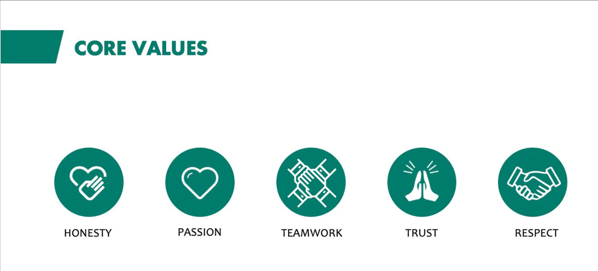

Vatio is a Fertilizer, Raw Materials and Chemicals trading company headquartered in the UAE. Our team has reliable connections across the Fertilizer, Raw Material and Hydrochloric Acid sectors with a specialist understanding of these markets gained from diverse backgrounds in trading and procurement.
We at Vatio are committed to conducting business with integrity, fairness and ethically. We comply with all applicable laws, regarding labour, corruption, fair competition environment and data protection. Our Code of Conduct and Anti-Bribery and Corruption policies applies to all employees and direct contractors globally.
We are engaged in the responsible sourcing of commodities, considering social, ethical, and environmental factors in our supply chains. Adherence to environmental laws and regulations is upmost and all employees must support the company’s efforts to minimize environmental impact.